Structure & Motion of Bat Wings
Our lab integrates biological and physical studies of flight in living bats and the structures that facilitate bat flight. Our investigations of the material properties of bat wing tissues show that bat wing bones vary greatly in mineral content, ranging from highly mineralized and very stiff near the body to nearly cartilaginous and highly compliant at the wing tips. Bat wing skin is also unique, balancing the extreme mechanical demands of flight with the energetic benefits of reducing weight. We have found that the gross architecture of the wing skin’s collagen-elastin network allows a single wing to encompass an extraordinary range of mechanical characteristics, and the distribution of sensory structures on the wing likely allows for precise sensing of airflow over the wing. The wing muscles that actuate flight are uniquely susceptible to heat loss, and as such have developed adaptations to maintain fast function in the face of sometimes extreme temperature variation.
Biologists have long viewed the flapping wings of flying vertebrates as analogous to the stationary, rigid airfoils of fixed-wing aircraft. But small, slowly moving flying animals experience viscosity effects far greater than even the smallest of aircraft. At this scale, flow over foils becomes turbulent, unsteady, and unpredictable. Basic parameters such as wing aspect ratio, angle of attack, and camber can influence flow patterns and aerodynamic forces in dramatically different ways than in faster flows.

Experimental Fluid Dynamics
Adapting techniques from experimental fluid dynamics, we can study wakes made by bats to better understand how these animals produce the forces employed in their distinctive flight. We carry out wind tunnel studies of bat wakes, coupled with detailed kinematics at high temporal and spatial resolution. We have found that the wing movements employed by bats generate characteristic wakes that have similarities with and differences from those of birds and insects. Wake structure can also differ almost as much among bat species as between a bird and a bat of comparable mass.
Our physical modeling experiments capture important aspects of the bat flight apparatus in simplified, abstracted form. Unlike the stiff wings of birds and insects, bats and gliding mammals employ airfoils made of stretchy or compliant material. Our pioneering work in compliant airfoils has demonstrated their remarkable capacity to generate lift at zero and very high angles of attack. We have found that the physical basis for this phenomenon lies in part in the self-cambering ability of compliant airfoils, which facilitates persistence of attached flow in conditions that would cause rigid airfoils to stall.
Our most sophisticated physical models are bat-like robots that capture many aspects of realistic bat flight with high fidelity, but allow us to independently modulate characteristics of the wingbeat in a manner that is impossible in living animals. These experiments help us study force production and flow dynamics, and give us controlled conditions under which we can tease apart the effect of motion and materials on aerodynamics and energetics.
Aeroecology
A few years ago, my colleague and friend Tom Kunz paid a visit to me from Boston University. He sat in my office, looked directly at me and announced, grinning, “There are fields called terrestrial ecology and marine ecology. It’s time to have Aeroecology.” Tom challenged me to help him define what the recognition of such a discipline might mean to those who study animal flight. The physical environment of the aerosphere is both complex and dynamic, and poses many challenges to the locomotor systems of flying animals. For example, airflows are altered and modulated by motion over and around natural and human-engineered structures, and turbulence is introduced by technologies such as aircraft and wind farms. An aeroecological approach can help better understand mechanics, energetics, sensing of aerial flows, and motor control of flight. From this perspective, we can begin to analyze group flight behaviors of bats, as when immense colonies exit caves for evening foraging. In the long run, we aim to link study flight behavior in nature to the more carefully controlled studies of flight mechanics and energetics we carry out in the lab.
Research in the Aeromechanics and Evolutionary Morphology Lab is supported by the Air Force Office of Scientific Research, the National Science Foundation, Hyundai, and Brown University
Some material on this website supported by NSF IOS-1145549 to SMS. Any opinions, findings, and conclusions or recommendations expressed in this material are those of the author(s) and do not necessarily reflect the views of the National Science Foundation.